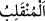

Hak Teâlâ Kur’an’da şâirler için “sapık” demişse de,
Aynı zamanda onlarla ilgili Kur’an’da açık istisnamız vardır”
Şiir, peygamberler için gereksiz şeylerden olduğu için Rasûlullah (s.a)’in şiir
söylemek için şiir söylememiş, ancak O’nun böyle bir kasdı olmaksızın ağzından şiir
döküldüğü olmuştur. Beşerî bütün kemal vasıflar, onun herşeyi kuşatan ilminde dâhildi.
Her fasih ve beliğ söz söyleyene, şâire ve şâirin de şâirine, kendi lehçeleri ve
ifâdeleriyle her kabîleye cevap verirdi. (Ümmî olduğu halde) kâtiplere yazmanın ilmini,
meslek sâhiplerine mesleklerini öğretirdi. İşte bu yüzden de âlemlere rahmet idi.
Yasaklanan şiirle ve diğer kötülüklerle kendilerine “haksızlık edenler, hangi dönüşe
(hangi âkıbete) döndürüleceklerini yakında bileceklerdir.”
Buradaki ‘haksızlık edenler’ ifâdesi her zâlim için geneldir.
“__WORD__ inkılâb, dönme, dönüş mânâsınadır. Yâni onlar ölümlerinden sonra Allah’a
öyle dönüp öyle varırlar; kötü bir dönüşle dönerler ve şerli bir varışla geri varırlar.
Çünkü onların dönüp varacakları yer cehennemdir.
Kâşifî der ki: “Hangi yere dönseler o dönecekleri yer ateş olacaktır.”
Rivâyete göre Ebû Bekr (r.a.) hayatından ümîd kesince Osman (r.a.)’dan şöyle bir
ahidname yazmasını istedi: “Bu Ebû Kuhâfe’nin oğlunun, kâfir kimsenin bile îmana
geldiği bir halde mü’minlere ahdi/vasiyetidir. Ebû Bekir (r.a.) bir ara baygınlık geçirip
ayrıldıktan sonra şöyle demiştir: Ben size Ömer b. Hattab’ı (r.a.) yerime halîfe
bırakıyorum. Eğer âdil olursa ki onun hakkında benim zannım budur. Eğer âdil olmazsa
“haksızlık edenler, hangi dönüşe (hangi âkıbete) döndürüleceklerini yakında
bileceklerdir.”
“__WORD__ adâletten sapmak ve haktan yüz çevirmektir.
Zâlimler üç çeşittir: En büyük zâlim, Allah’ın şeriatının (hükmü) altına girmeyendir.
Allah Teâlâ: “Doğrusu şirk, büyük bir zulümdür.” (Lokman, 31/13) buyurarak bunu
kasdetmiştir. Ortanca zâlim, sultanın hükmünü yerine getirmeyendir. En küçük zâlim ise
amel ve çalışmaktan haylazlık yapıp insanların menfaatlarını alan, kendi menfaatini
onlara vermeyendir.
Adaletin fazîletindendir ki onun zıddı olan zulümden tevbe ancak adalet yapmakla
mümkündür. Şâyet hırsızlar aralarında bir şeyi şart koşsalar ve onda adâleti
gözetmeseler, işleri yolunda gitmez.
Akıl sahibi kimseye gereken, bu vaîd ve şiddetli tehdîde kulak vermek, eğer âdil bir
kimse ise kemalden sonra noksanlıktan Allah’a sığınmaktır.
Her sâlikin yardımcısı, sülûk edilen yolların tehlikelerinden kurtaran ancak Allah’tır.
[41]
Müslim, Fedâilu’s-sahâbe, 157.